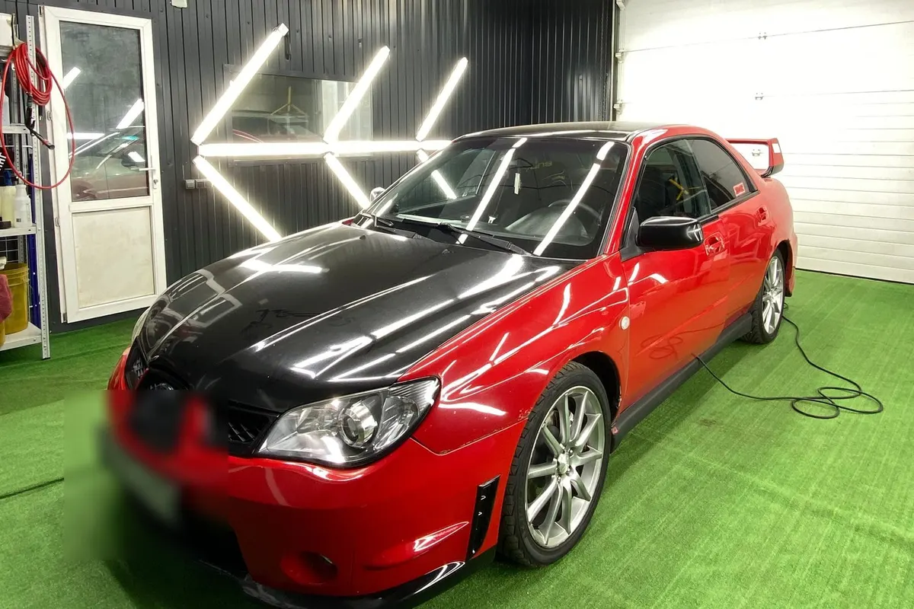
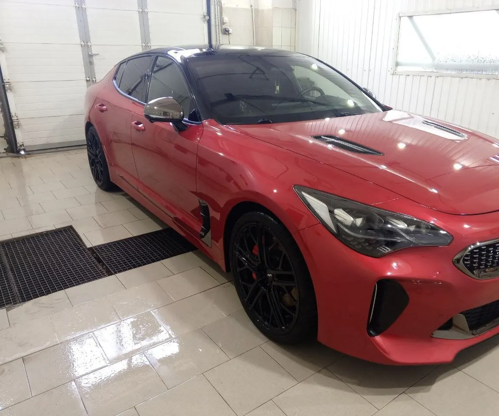
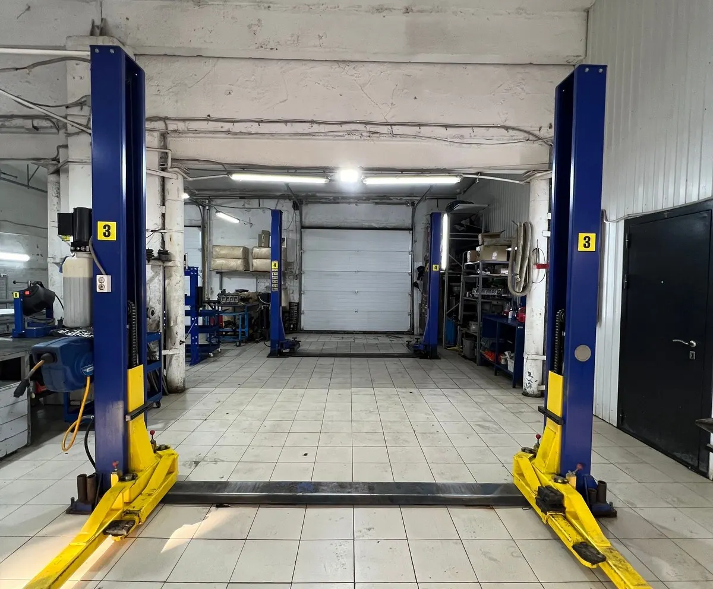
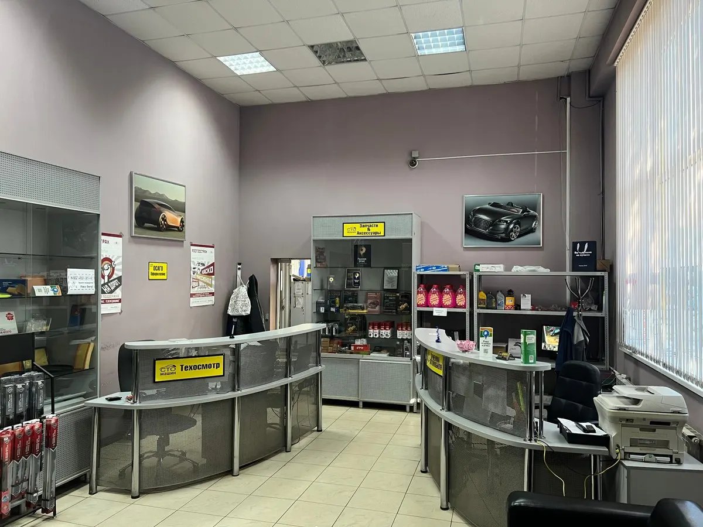

Детейлинг, автомойка, автосервис · Комсомольская, 77/2
Детейлинг, мойка и автосервис в Йошкар-Оле
Детейлинг, химчистка и мойка по записи. Рядом, в том же автокомплексе, диагностика на вибростенде, ремонт и шиномонтаж. Ежедневно 9-20.
- 4,7 на Яндекс Картах, 111 отзывов
- Детейлинг, мойка, ремонт и шиномонтаж в одном комплексе
- Комсомольская, 77/2, ежедневно 9-20

Что делают и что считают отдельно
Входит
- Детейлинг: химчистка салона, полировка кузова, керамика, бронирование и полировка фар
- Автомойка в отдельном боксе: двухфазная и трёхфазная мойка, мойка двигателя и днища, кварцевое покрытие
- Автосервис: диагностика ходовой на вибростенде, компьютерная диагностика, замена масла и тормозных накладок, ремонт двигателя, подвески и трансмиссии
- Шиномонтаж, балансировка, 3D развал-схождение, правка дисков
- Техосмотр и запчасти в наличии и под заказ
Отдельно, если нужно
- Расходные материалы: например, для заправки кондиционера - 7 ₽ за грамм
- Запчасти: в наличии и под заказ, считаются отдельно от работы
- Ремонт двигателя, подвески и коробки: цену называют после осмотра
- Мойка и химчистка: цена растёт с классом автомобиля и набором услуг
Услуги и цены
Ориентиры по прайс-листам автокомплекса: «от» - стартовая цена, итог зависит от марки, модели и класса автомобиля.
Детейлинг и химчистка
- Химчистка салона и багажникаполный комплексот 15 000 ₽
- Химчистка передних сиденийот 2 000 ₽
- Химчистка потолкаот 2 000 ₽
- Полировка кузоваот 15 000 ₽
- Керамика, двухслойное покрытиеот 10 000 ₽
- Бронирование и полировка фар4 000 ₽
- Озонирование салона1 000 ₽
Автомойка
- Стандартдвухфазная мойка, коврики, сушка, продувкаот 800 ₽
- Стандарт+двухфазная мойка, коврики, влажная уборка, пылесосот 1 200 ₽
- Премиумтрёхфазная мойка с наношампунем, влажная уборка, пылесос, стёкла, коврики, чернение, полироль пластика, багажникот 2 000 ₽
- Кварцевое покрытиеот 800 ₽
- Мойка двигателястандартот 1 500 ₽
- Мойка днищаот 800 ₽
Диагностика и сервис
- Диагностика ходовой и подвески на вибростендестенд имитирует неровности дороги и показывает проблемные узлы1 000 ₽
- Компьютерная диагностикадиагностический сканер, цена зависит от марки и моделиот 1 500 ₽
- Эндоскопия двигателя1 000 ₽
- Замена масла в двигателев цену входит замена масла и масляного фильтраот 1 000 ₽
- Замена тормозных накладокцена зависит от марки и моделиот 500 ₽
- Заправка кондиционерарасходный материал отдельно: 7 ₽ за грамм1 400 ₽
Шиномонтаж и развал-схождение
- 3D развал-схождениерегулировка угловот 1 500 ₽
- Шиномонтаж и балансировкаремонт резины, правка дисков, аргон2 100 ₽
- Правка литых и штампованных дисковза один диск, цена зависит от сложностиот 500 ₽
Цены взяты из прайс-листов автокомплекса и могут измениться. Итог называют при записи, после описания задачи и осмотра.
Как проходит визит
- 01
Записались
Выберите услугу, день и время в форме: готовый текст для звонка подставится сам.
- 02
Осмотр и цена
Приёмщик осматривает машину и называет примерную стоимость работ.
- 03
Работа в боксе
Мастера делают согласованное, о дополнительных работах сообщают и спрашивают ваше согласие.
- 04
Выдача
Получаете машину и заказ-наряд, вопросы по работе решаются на месте.



Почему возвращаются
Всё в одном месте
Детейлинг, мойка, сервис и шиномонтаж в одном автокомплексе: не нужно ездить по городу.
Объясняем простыми словами
Механики показывают, что с машиной, и объясняют, что делать сейчас, а что подождёт.
Быстро принимаем
На ремонт принимаем без долгих очередей, мастер-приёмщик сразу смотрит машину.
Есть где подождать
Зона ожидания с диваном и чаем, парковка, туалет и Wi-Fi.
Отзывы с Яндекс.Карт
«Механики молниеносно нашли причину поломки,так же оперативно устранили проблему,спасибо мастеру-приемщику Григорию за быстрое обслуживание»
Дмитрий Семенов · 25 апреля
«Сделали детейлинг комплекс, результатом очень доволен. Все сделали вовремя, как и обещали. Ребята вежливые, отзывчивые. Дали рекомендации, спасибо вам огромное.»
Эдуард Л. · 18 мая 2025
«Сервис просто шикарный. Так получилось, что были проездом и случились проблемы с машиной . На СТО все починили оперативно и качественно . Когда выехали в сторону дома мастер приёмщик попросил позвонить и сказать, как машина после ремонта. Такая забота)))»
Людмила Алтунина · 21 июня 2025
Отзывы с карточки на Яндекс.Картах, без правок.
Частые вопросы
Нужна ли запись?
На мойку и детейлинг лучше записаться заранее по телефону: в боксе один автомобиль, работаем без спешки. На ремонт принимаем и без записи, если есть свободное место.
Куда звонить по ремонту?
Детейлинг и мойка: +7 (902) 739-00-77. Автосервис и шиномонтаж на Комсомольской, 77/2: +7 (927) 887-37-58.
Что такое диагностика на вибростенде?
Стенд имитирует неровности дороги и помогает найти узел ходовой или подвески, который стучит или вибрирует. Стоит 1 000 ₽.
Сколько стоит мойка?
Двухфазная мойка с ковриками, сушкой и продувкой - от 800 ₽ для первого класса автомобиля. Дальше цена растёт с классом и набором услуг.
Чем можно оплатить?
Наличными, картой, переводом, по СБП и QR-коду, возможен безналичный расчёт и рассрочка.
Где вы находитесь?
Комсомольская улица, 77/2, Йошкар-Ола. Есть парковка. Работаем ежедневно с 9:00 до 20:00.
Позвоните и запишитесь на удобное время
- Адрес
- Комсомольская улица, 77/2, Йошкар-Ола
- Часы
- ежедневно 9:00-20:00
- Детейлинг и мойка
- +7 (902) 739-00-77
- Автосервис и шиномонтаж
- +7 (927) 887-37-58